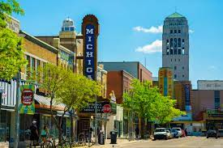

Restaurants
Top Three Reasons We picked Our Topic
- We like food
- Ann Arbor has good restaurants
- We like food blogs
This is Jack and Emily's webpage of our favorite restaurants in the Ann Arbor area. We are both big foodies and love the food in Ann Arbor. We decided to make this page to share our love of food with the rest of the community. We hope you all like it and let us know your opinions!
Ann Arbor helps the University of Michigan separate from many other colleges and the food in the city plays a big roll in that. According to Thrillist, Ann Arbor ranks 4th in the country in food selection amongst college towns. If you are a persepctive student and care a lot about food, you don't have to worry about getting a good meal in Ann Arbor.